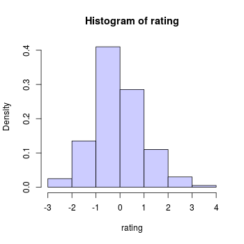

Estadística descriptiva
Contenido
%matplotlib inline
import numpy as np
import pandas as pd
import scipy.stats
import matplotlib.pyplot as plt
from matplotlib import animation
from matplotlib import rcParams
rcParams['figure.dpi'] = 120
from IPython.display import HTML
from IPython.display import YouTubeVideo
from functools import partial
YouTubeVideo_formato = partial(YouTubeVideo, modestbranding=1, disablekb=0,
width=640, height=360, autoplay=0, rel=0, showinfo=0)
12. Estadística descriptiva¶
Sea una muestra de datos. Antes de responder preguntas con los datos debemos entenderlos
Para entender la muestra podemos intentar describirla
Por ejemplo
¿Son mis datos discretos o continuos? ¿Cuál es su rango?
¿Cuál es el valor medio de mis datos? ¿Cuál es su disperción?
¿Tiene una moda o múltiples modas?
¿Existen datos extremos (outliers)?
Todas estas preguntas están relacionadas a la distribución de los datos. Repasemos este concepto
12.1. Repaso de fundamentos¶
Distribución de probabilidades
Una distribución de probabilidad es una función que relaciona los valores posibles de una VA con sus respectivas probabilidades de ocurrir
La definición es un poco distinta dependiendo si la variable aleatoria es discreta o continua
Variable continua: Toma valores de un conjunto no numerable. Ejemplos: Los números reales
Variable discreta o categórica: Toma valores de un conjunto numerable. Puede ser ordinal, por ejemplo los números enteros. Puede ser nominal, por ejemplo el género o la étnia de las personas
Ambas pueden estar definidas en un cierto rango
Función de masa de probabilidad
Si nuestra variable \(x\sim X\) es discreta entonces podemos calcular la probabilidad de un evento como
donde \(p_X(x)\) se conoce como función de masa de probabilidad (fmp)
Para que una fmp sea valida se debe cumplir
Estar en el rango de una probabilidad: \(p_X(x) \in [0, 1]\)
Sumar a 1 en el dominio completo: \(\sum_{x\in\mathcal{X}} p_X(x) = 1\)
Función de densidad de probabilidad
Si nuestra variable \(x\sim X\) es continua entonces debemos definir un rango si queremos estimar su probabilidad
donde \(f_X(\cdot)\) es la función de densidad de probabilidad (fdp) y \(F_X(\cdot)\) es la función de densidad acumulada
Para que una fdp sea valida se debe cumplir
No-negatividad: \(f_X(x) \geq 0\)
Integrar a 1 en el dominio completo: \(\int_{x\in\mathcal{X}} f_X(x) \,dx = 1\)
Probabilidad conjunta, marginal y condicional
Las definiciones anteriores son para fdp/fmp de una variable
Si queremos calcular la probabilidad de que \(X=x\) y \(Y=y\) entonces necesitamos la distribución conjunta \(P(X, Y)\)
A partir de la conjunta se pueden obtener la probabilidad marginal de \(X\) (o de \(Y\))
que corresponde a sumar (marginalizar) la variable que no nos interesa
Usando la conjunta y las marginales podemos obtener las probabilidades condicionales
ssi \(P(X=x) \neq 0\)
De esta forma podemos relacionar variables estilo causa y efecto
Distribución acumulada empírica
En general no sabemos a priori la fdp/fmp de los datos
Podemos calcular probabilidades usando la distribución empírica
Si tengo \(n\) datos \(X_1, X_2, \ldots, X_n\), su distribución acumulada empírica es
Donde la función indicadora \(\mathbb{1}(X_i<x)\) es igual a \(1\) si la \(X_i<x\) o \(0\) en el caso contrario
Si los datos están ordenados entonces sólo tenemos que buscar en que posición se encuentra \(x\) y dividir por \(n\)
Podemos implementarla en NumPy como
def ECDF(data):
data = np.sort(data)
n = len(data)
def result(x):
return np.searchsorted(data, x, side='right')/n
return result
Luego si tengo una arreglo de datos \(a\) y quiero saber la probabilidad de \(b\)
ECDF(a)(b)
12.1.1. Ejercicio¶
En esta lección usaremos la base de datos Diagnóstico de cancer de mama de la Universidad de Wisconsin
La base de datos incluye un identificador de paciente y un diagnóstico hecho por un médico
El diagnóstico puede ser M: tumor maligno o B: tumor benigno
Cada paciente tiene asociado tres muestras de nucleos celulares y cada muestra está descrita por 10 atributos
Trabajaremos con el radio y la textura de la primera muestra
df = pd.read_csv('../data/cancer.csv', index_col=0)
df = df[["diagnosis", "radius1", "texture1"]]
display(df.head())
Usando estos datos, conteste
¿De que tipo son las columnas diagnosis, radius1 y texture1? ¿Cuál es el rango de cada uno?
Grafique la distribución acumulada empírica del radio dado que el tumor es benigno. Repita para el caso maligno
Estime la probabilidad de que el radio sea menor a 15 dado que es el tumor es benigno. Repita para el caso maligno
Estime la probabilidad de que la textura sea mayor que 10 y menor que 20 dado que el tumor es benigno. Repita para el caso maligno
Estime la probabilidad de que el radio sea menor a 15 y que la textura esté entre 10 y 20 dado que el tumor es maligno. Repita para el caso maligno
Solución paso a paso con comentarios
YouTubeVideo_formato('ihcip87q4E8')
12.2. Histograma¶
El histograma es una método que nos permite estimar la densidad o masa de probabilidad de una variable.
12.2.1. Construcción de un histograma¶
La construcción de un histograma de densidad tiene dos pasos
Definir un conjunto de intervalos/cajas/bines para la variable de interés
Contar cuantos elementos de la muestra corresponden a cada intervalo y dividir por el total
Esto se visualiza usando un gráfico de barra
Estudiaremos el caso más simple donde los bines son
Disjuntos: El fin de un bin es el comienzo del siguiente
Del mismo tamaño: Todos los bines tienen el mismo ancho
En este caso los intervalos se construyen especificando el
rango del histograma: Comienzo del primer bin y termino del último bin
cantidad de bines: En conjunto con el rango especifican el tamaño de los bines
En el siguiente ejemplo la cantidad de bines es \(7\) y el rango es \([-3, 4]\), por ende el tamaño de los bines es \(1\)
El tamaño de los bines es un parámetro sensible ya que controla la resolución del histograma. Si usamos bines muy grandes perdemos detalle. Si son muy pequeños el histograma será muy ruidoso.
12.2.2. Interpretación de un histograma¶
El histograma revela visualmente algunas propiedades y comportamientos de la muestra. Considere los siguientes ejemplos de histogramas de distribuciones univariadas

El histograma nos permite ver
Cantidad de modas: Una, dos, múltiples o ninguna en particular (distribución uniforme)
Distribución simétrica o asimétrica. En una distribución asimétrica el peso puede estar hacia la cola izquierda o derecha
12.2.3. Construyendo histogramas con matplotlib¶
Podemos construir y visualizar un histograma con matplotlib usando
plt.hist(x, # datos
bins=None, # Cantidad de cajas (escalar) o bordes de las cajas (secuencia creciente)
range=None, # Valor mínimo y máximo del histograma
density=False, #dividir por len(x) o no
...
)
Para el caso de dos variables se puede hacer un histograma bidimensional (mapa de contornos) con
plt.hist2d(x, # data eje horizontal
y, # data eje vertical
bins=10, # Igual que hist
range=None, # Arreglo [[xmin, xmax],[ymin,ymax]]
density=False, #Igual que hist
...
)
Las alternativas en la librería seaborn serían seaborn.distplot y seaborn.jointplot, respectivamente
12.2.4. Ejercicio¶
Muestre tres gráficos con los histogramas de las siguientes variables
El radio (1D) para los diagnósticos M y B
La textura (1D) para los diagnósticos M y B
El radio y la textura (2D) para los diagnósticos M
El radio y la textura (2D) para los diagnósticos B
Use el mismo rango y cantidad de bines para M y B. Explore la influencia de la cantidad de bines.
Compare las distribuciones de los casos M y B analizando sus semejanzas y diferencias
Solución paso a paso con comentarios
YouTubeVideo_formato('DOHp8xFDQNg')
12.3. Descriptores de la distribución¶
Visualizar la distribución nos da mucha información. Pero en algunos casos sólo interesa comprobar la existencia de ciertas características o atributos de la distribución
Podemos resumir una distribución en función de sus momentos
Cada momento describe una propiedad en particular
Primer momento o media: Describe donde está localizada la distribución
Segundo momento o varianza: Describe el ancho o dispersión de la distribución
Tercer momento o simetría (skewness): Indica si la distribución es más pesada hacia la izquierda o hacia la derecha
Cuarto momento o curtosis (kurtosis): Indica si la distribución es picuda o plana
La siguiente figura esquematiza las influencia de los momentos

También podemos describir una distribución en función de la
Moda: Valor más repetido
Mediana: Valor central
Diferencias entre percentiles
12.3.1. Calculando descriptores con Python¶
Podemos obtener la media y la desviación estándar de un dataframe usando
df.describe()
Podemos obtener los primeros cuatro momentos de un ndarray junto a su largo y rango con
scipy.stats.describe(x)
Podemos calcular un momento de cualquier orden con
scipy.stats.moment(x, moment=5)
Otros descriptores comunes están implementados en el módulo scipy.stats
12.3.2. Ejemplo¶
Descriptores para el radio y la textura usando pandas y scipy
# Descriptores
display(df.describe())
print(scipy.stats.describe(df[["radius1", "texture1"]]))
12.4. Distribuciones comunes¶
Existen muchísimas distribuciones de probabilidad asociadas a distintos fenómenos y experimentos. La siguiente tabla presenta las distribuciones más comunmente encontradas
Distribución |
Fenómeno que representa |
Ejemplo |
|---|---|---|
Bernoulli |
Evento binario |
Lanzamiento de una moneda |
Binomial |
Multiples eventos binarios independientes |
|
Categórica |
Evento con \(k\) valores posibles |
Lanzamiento de un dado, Ruleta |
Poisson |
Conteo de eventos ocurridos en un período de tiempo |
Cantidad de alumnos que llegan entre 9:50 y 10:00 |
Exponencial |
Valor continuo positivo |
Tiempo de espera entre eventos |
Gamma |
Valor continuo positivo |
Tiempos de espera hasta que ocurren \(n\) eventos |
Beta |
Valor continuo en \([0, 1]\) |
Tiempo para completar una tarea, proporciones |
Normal/Gaussiana |
Valor continuo ubicado en la vecindad de un valor central |
|
Uniforme |
Valor discreto/continuo acotado a un rango, todos con igual probabilidad de ocurrencia |
Conocer su forma nos permite reconocerlas cuando estudiamos la densidad empírica de nuestros datos
Les recomiendo el zoológico de distribuciones para ver interactivametne la forma de estas distribuciones
En la próxima lección veremos en mayor detalle como podemos ajustar una distribución teórica a nuestros datos
12.5. Generando muestras aleatorias con NumPy y SciPy¶
Podemos usar el módulo np.random para generar números aleatorios con las siguientes distribuciones
randn: Números reales con distribución normal estándarrand: Números reales con distribución uniforme en \([0, 1]\)randint(low=1, high=10): Números enteros con distribución uniforme entre \([0, 10]\)
Si necesitamos datos que siguen otra distribución es más recomdable usar el módulo scipy.stats. La lista de distribuciones disponible es sumamente extensa y está divida entre tres
Todas las distribuciones de scipy.stats tienen los siguientes métodos
pdf/pmf(x)Retorna la distribución de probabilidad evaluada en \(x\)cdf(x)Distribución acumulada evaluada en \(x\)ppf(p)Inverso de la distribución acumuladarvs(size=100)Retorna \(100\) muestras a partir de la distribución
Ejemplo
Generando y visualizando \(1000\) muestras de una distribución Gaussiana (normal) con media 2 y desviación estándar 10
from scipy.stats import norm
dist = norm(loc=2, scale=10) # Constructor
samples = dist.rvs(size=1000) # Generación
fig, ax = plt.subplots(figsize=(7, 3), tight_layout=True)
ax.hist(samples); # Histograma
La próxima clase veremos en mayor detalle como usar estos y otros métodos
12.6. ¿Por qué la distribución Gaussiana para ser tan común?¶

El siguiente sitio web muestra algunos ejemplos de la fenómenos que se distribuyen de forma Gaussiana: https://galtonboard.com/probabilityexamplesinlife ¿Por qué esta distribución parece ser tan común?
Recordemos lo siguiente
Ley de los grandes números
Sean \(X_1, X_2, \ldots, X_N\) V.A independientes e idénticamente distribuidas (iid) con media \(\mu\). Se cumple que su promedio
tiende a \(\mu\) cuando \(N \to \infty\)
Teorema central del límite
Si \(X_1, X_2, \ldots, X_N\) son V.A iid, entonces su promedio de distribuye como
Es decir que
El promedio (o suma) se distribuye normal sin importar la distribución original de las V.A.
siempre y cuando las VA sean independientes. ¿Cúantos de los ejemplos del sitio web mencionado corresponden a sumas o promedios?
12.6.1. Ejercicio¶
Sea una variable aleatoria que corresponde al lanzamiento de \(n\) dados de seis caras. Lance los \(n\) dados 1000 veces y muestre con un histograma la distribución del promedio de los \(n\) dados. Repita para \(n: 1, 2, ..., 15\)
¿Qué puede decir de la distribución que observa?
Hint: Puede usar scipy.stats.multinomial para modelar el resultado de lanzar \(n\) dados
Solución paso a paso con comentarios
YouTubeVideo_formato('2QwMBZAlvc4')